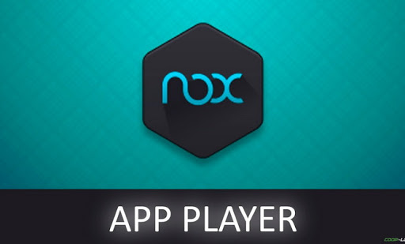
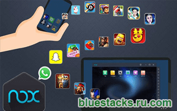
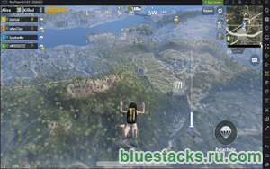
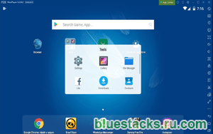
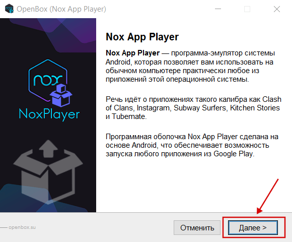
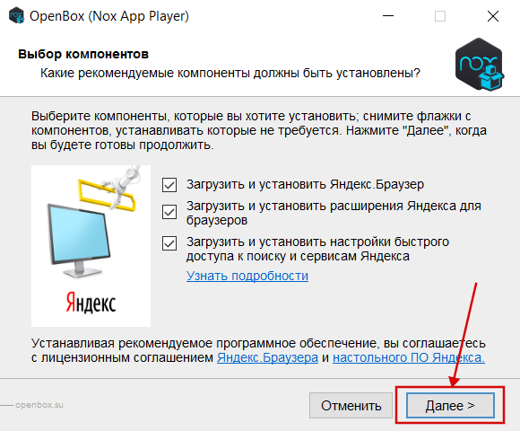
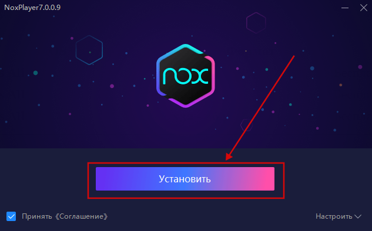

|  | Категория: | Виртуализация |
| Поддерживаемые ОС: | Windows All | |
| Разрядность: | 32 bit, 64 bit, x32, x64 | |
| Для устройств: | Компьютер | |
| Язык интерфейса: | на Русском | |
| Версия: | Последняя | |
| Разработчик: | Nox Limited |
Программа Nox App Player (Нокс плеер) – это эмулятор, который позволяет устанавливать на компьютер программы из мобильного приложения. Он поддерживает операционные системы Windows и Mac OS. Оболочка программы состоит из Android последней версии, что открывает доступ к любому приложению из маркета.
|  |  |  |
{kind=link}
{kind=link}
{kind=link}
Nox App Player на компьютер
Эмуляторы в настоящее время пользуются большим спросом. Программа Nox App Player – одна из самых популярных, потому что бесплатна и проста в управлении. Эмуляторы необходимы для управления мобильными играми с компьютера. Использование подобных программ в разы повышает результаты, получить достижения становится проще, а занять лидирующие места в рейтинге не кажется сложным. При этом программа позволяет запускать одновременно до 4 игр. Мультизадачность экономит время и ресурсы игрока.

Приложение бесплатное но единственный минус, это реклама, как указывает автор эмулятора, они не принимают пожертвования и не собираются создавать платную версию программы, в которой не будет рекламы. При установке Nox App Player антивирус может ругаться, поэтому его следует заведомо отключить. Как только вы откроете установленное приложение, на экране появится рабочий стол системы Android. Для удобства в приложении сразу установлен Play Market, поэтому нам не требуется отдельная загрузка APK файлов (но загрузить игры можно и этим способом). Все, что от нас требуется – запустить приложение и ознакомиться с управлением. Главным плюсом эмулятора является то, что к каждой игре прилагается системная настройка.
Скачать Nox App Player бесплатно
| Приложение | OS | Распаковщик | Формат | Версия | Загрузка |
|---|---|---|---|---|---|
| Nox App Player | Windows All | OpenBox | x32 | Бесплатно | |
| Nox App Player | Windows All | OpenBox | x64 | Бесплатно | |
| Nox App Player | Windows All | OpenBox | x32 — x64 | Бесплатно |
Как установить Nox App Player:
Запустите установочный файл.
Ознакомьтесь с информацией и нажмите «Далее».

Нажмите «Далее», или снимите галочки с рекомендуемого ПО и нажмите «Далее». Если снять все галочки, рекомендуемое ПО не установится!

После всех шагов нажмите «Установить».

В зависимости от мощности компьютера, в программе предусмотрена быстрая смена версии Android. 4 подойдет слабым ПК. 5 версия обеспечивает самую лучшую производительность. 7 – самая новая, поэтому она поддерживает последние версии игр. В настройках системы вы можете установить качество графики и ограничить количество кадров в секунду. Кроме этого, эмулятор предусмотрен для комплексной очистки системы от ненужных и устаревших файлов. Также можно настроить резервное копирование, чтобы не потерять данные. При помощи эмулятора можно записывать видео с экрана. Запечатлеть результаты можно и при помощи фото. Эмулятор поддерживает ввод с мыши и клавиатуры. При необходимости можно настроить управление на другие контроллеры. Nox App Player – это отличный эмулятор, который позволит добиться высоких результатов в играх рядовому пользователю. Разработчику он может быть полезен для тестирования приложений.
Вообще не лагает нокс рулит
Это точно
Старый нокс лагал а тот долго качается
скорость скачивания зависит от вашего интернета!
стандофф 2 потянет?
да
АНОНИМ, как ты это понял?
Я это понял потому что- ты это, а я это ты